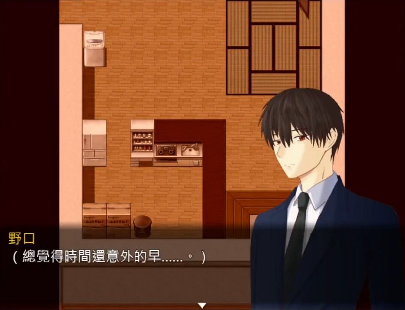

栖川的最後一日
發表於 27th May 2011
這天是栖川到校的最後一天。
在回憶環節，進入浴室之前若先調查日曆，
可以得知當天正是5月27日。
嚴格來說也是第一章展開整個故事的起點。
進入浴室，淺居會目睹栖川死亡的真相。
並不是最初有些玩家猜測的「白崎動的手」，
而是栖川自己選擇結束生命。
另外，雖然不太可能會注意到，
「菅野」、「白崎」、「栖川」三位的住處，
房間格局雖然都一樣，但都有數處不同。
在6月17日空間內的調查有暗示到這點。
白崎的行動
發表於 28th May 2011
從浴室出來後，白崎會緊隨淺居來到走廊。
此時發生的情節，就是B班班導「岸本」接到的請假聯絡。
同一天，
白崎不只聯絡岸本，
為求保險不讓栖川的事情敗露，還交換了雙方的門牌。
同樣的，在回憶環節離開玄關之前調查也能得知日期為5月28日。

至於玄關的那幾袋垃圾，是為了表達白崎搬入栖川家，
(那幾袋垃圾不是栖川啊喂!!!)
所以石川在調查栖川(實則白崎)的住處時，
才會感覺到這個地方似乎有一段時間沒人居住了。
隱藏要素 你發現了嗎？
發表於 28th May 2011
結束白崎分屍的劇情後，
來到玄關原本要調查書房，卻被白崎拉出來。
此時物品欄的日記會變成最後的「白崎的日記」。
隨著電鈴響起，有多少玩家還會記得回去探索房間呢？
此處的隱藏要素就是「S的房間」 > 「訊息」的密碼。
第一章所有的亂碼都能夠被解密。
第一章 遊戲開始
發表於 3th Jun 2011
時間線來到6月3日，也就是第一章的開頭。
登場的是有著數張立繪卻又活不過遊戲時間5分鐘的女角：「倉橋佐奈」。
(我Debug的時候她都活不過15秒，M表示抗議)
此處她所收到的黑盒，雖然沒有明說，
但全破 or 知道劇情的各位，應該也已經知道正是出自櫻井之手。
如果觸發倉橋家1F玄關左側的門，
往樓梯(客廳)方向移動的話，會聽到 敲~門~聲~
聲音我是調比較小聲，但仔細聽還是聽的到。
(算是個小細節，我也不敢指望有人會發現)
劇間
發表於 10th Jun 2011
雖然礙於遊戲篇幅、節奏，並沒有將詳細內容演出，
設定上6月7日櫻井接觸白崎，並給了她黑盒。
6月10日則是發生了「A班集體死亡事件」
石川偵探事務所
發表於 11th Jun 2011
埋了一年多的女角，終於有機會操控她了(?
(不曉得有多少人被序章發佈時的雙人圖騙到)
「都玩到結局了，所以那個妹子呢？」
真正的主角(暫時)終於在第一章登場，
(Ｌ：但之後會不會發生意外...導致換主角真的不好說)
PS：石川事務所的格局是依照「序章」的結尾去製作的，
唯一不同之處是保險箱(在第一章結尾後，被石川收走了)
設定上淺居從小時候就住在這間事務所，
至於詳細到底發生了什麼事......未來的劇情會為大家解釋。
(電腦一開始的密碼是設計成玩家可根據名片來回推)
(理想狀況是有玩家能記得序章的結尾...不過一年多了，抱歉。)
石川調查鋼琴時口中的「那傢伙」，並不是指淺居。
如果能解開保險箱密碼觀看額外劇情，或許就能得到一些提示。
醫院
發表於 12th Jun 2011
一離開事務所，場景切換至醫院的時候，
如該附圖的對話，這個時間點其實「已經被困進去了」。
沒錯，醫院劇情一整段除了逃出的瞬間，
其實打從一開始就被困在空間裡面。
雖然只是小小的細節，但開頭的演出結束後，
川上請石川到外面、有文件要請他過目，
經過開關門的音效，石川卻還留在停屍間。
(我相信太細節了...如果不是作者自己提出根本是藍色窗簾)
而也是從這裡開始闡明，進出空間都會是同一塊地方。
同時補完方才提到，醫院環節打從一開始就在空間內的設定。
學校首日
發表於 14th Jun 2011
不曉得會不會有人有疑問，醫院環節結束當晚，圖中的演出是什麼意思？
又是個較隱晦(對不起這真的是寫故事的習慣)的演出
這邊是想表達石川折返回到事務所(算是擔心)，
而淺居其實原本有睡衣ver，
但是怎麼看怎麼怪，後來就刪除了。
這次特別為淺居準備了水手服ver.立繪
小小的提一下，
故事上來說其實「原本的設計」確實是序章順著時間線接第一章。
如果從孤島篇接回來也是能銜接校園篇
經過討論還是做個劇情的變動
反過來用第一章去銜接序章(個人也覺得這樣比較有趣)
沒有使用手機求救會增加什麼劇情呢？
這部分是：會影響淺居離開舊校舍時，畫面回捲看到的櫻井
或許會有玩家覺得：「就這樣？」
不好意思真的是這樣(汗，
原因是：前期櫻井基本上是全白的，
但是她也算是在大主線會出現的角色(是的，未來還會再出現)、
包括第一章故事的結尾，
所以設計上會認為「知道櫻井有問題」算是個大的提示，
且在第一章最後的環節可以稍微誤導玩家
蜘蛛之會 事情發生的那天
發表於 15th Jun 2011
沒錯，時間線來到6月15日。
當初序章被困在飯店不斷被提示的那一天：0615。
至於序章的整理，就留在頁面尾段說明吧！
第二次調查、探訪菅野老師
發表於 17th Jun 2011
雖然從A班集體死亡事件，劇情走向逐漸轉到栖川的欺凌事件。
但這天仍為了菅野老師持有的情報，而前去拜訪。
從醫院開始就提過數次，如果被困入空間要使用手機發送簡訊，
再次困入公寓區域的空間時，發送訊息也成了劇情推進的觸發點。
當抵達4樓，並朝向菅野老師的住處前進時，
突如其來的追逐戰使淺居必須折返至梯間。
雖然不影響結局，但此處其實有個分歧。
1. 從左側梯間的3樓回到2樓(進入空間的地點)
2. 繞一圈重新進入4樓並進入菅野老師的房間
(應該許多人都知道，恐怖遊戲追逐戰的技巧，快速進出)
(雖然要設定成卡住玩家，不讓玩家在怪物出來前折返也不是不行)
(但還是覺得沒必要增加無謂的難度，所以其實可以快速折返不用繞樓層)
進入菅野老師的住處後(?)，如果調查日曆會發現日期是5月27日。
此時進入浴室，該浴室的格局就是栖川家的浴室，
而且保留著5月27日發生的場景。(這個時間點應該不會有人注意到就是)
而客廳的部分，格局仍是等等脫離空間後的菅野老師家客廳。
這邊滲了血下來，不曉得有多少玩家聯想到樓上有發生事情......呢？
而房間的部分，格局正是白崎的房間。
雖然劇情是後面才會進去她的房間進行調查，
萬一 萬一 有人能發現作者會很開心(汗)。
先不說可能很多人都不會懷疑這種RpgMaker的遊戲會塞多少細節，
就算有認真看也很難發現吧哈哈哈。
本段最後要提的，是白崎與栖川的門牌問題。
細心調查的玩家肯定有發現：白崎和栖川都住在這棟公寓，
但是，在空間內、脫離空間後......樓上門牌的順序是相反的。
由於現實世界的門牌是被白崎動過手腳的，
空間內的門牌反而才是真實的位置。
順帶一提，淺居被拜託出去丟垃圾的時候可以上5樓確認。
而菅野老師家客廳從樓上滲血的部分...想必也不用多說了吧。
第一章的尾聲
發表於 20th Jun 2011
為了這個Bug演出，我特別先把遊戲弄壞看看Bug會長怎樣。
就結果來說非常成功。
可能會有人認為搞這齣是在幹嘛？
不僅是為了銜接劇情的尾聲有個選擇發送簡訊的地方、
更是再次補足了對於進入空間的設定。
沒錯，就在遊戲壞掉玩家重啟的那刻，就進入空間了。
所以重啟後所有角色對話亂碼，意味著進入空間的時間點是上一輪，
且角色的亂碼......可以被解碼，也有一兩位有不同的對話。
就交給玩家們去發掘吧。
這邊當初有在斟酌，要讓白崎說什麼。
最後決定用模稜兩可的「不見了」
普通原本聚在一起分開了......一般的狀況我會用「走散了」。
這邊算是埋個懸念，白崎從頭到尾都沒有說謊，卻也很多沒講(壞女人)
這個房間有玩過序章的玩家肯定有印象，就是野口公司樓下的「資料室B」
目前就我所知有一位玩家有發現：櫻井被找去視聽教室前，同事C的櫃子：
「憑依」的內容原本是有文字的。
也就是序章的時間點，野口調查的「憑依」內容是被櫻井加工後的結果。
而骷髏上的紙條，在序章時原本是：同事C的骷髏。
第一章的亂碼......經過解密文字也會不同。
埋了一年多的伏筆能回收，很開心(雖然很難發現)
徒花
發表於 20th Jun 2011
進入第一章的尾聲，
這邊就黑盒提一下作祟系列的設定吧。
想必還有印象的玩家應該都會知道，
序章時同事Ｃ隱隱約約跟事件有所關聯，
早在第一章菅野的日記裡：在路上遇到了奇怪的女人。
這邊指的也是同事Ｃ。
第一章的最後，演出是完整還原序章的結尾。
而未知的某處也.......
感謝M，畫技真的進步多多
黑盒的設定其實早期就有雛形，
但是放到第一章才完整形象、提到，主要是在控制故事設定的已知量。
畢竟遊戲不能盡塞設定不講故事，為了把持遊戲節奏的平衡，
序章只描述了岡部的妻子(千鶴)遇到了誰，接受了什麼，導致作祟的發生。
相信玩家在解手法、日期跟理解故事已經花費了大量的精神。
所以不是不講、沒有想好，而是一直在控制可以釋出的資訊量。
接下來的將會銜接「序章」、「第一章」的結尾，希望大家會喜歡。
作祟 序章：蜘蛛之會
發表於 21th Jul 2011
作祟系列的起點，說真的我一開始以為沒戲。
雖然之前提到資訊量的釋出、斟酌遊戲背景的設定......種種因素，
但其實還有一個很大的因素是：會不會根本沒人玩。
這問題真的不可控、常常就算作者自己覺得好，玩家也不一定買單，
而且就算是用RpgMaker那麼好開發的工具，還是 非 常 花 時 間 。
所以序章決定做成就算沒有解釋清楚就收尾，自己還能接受的設計。
剛才也提過，6月15日是「那次讀書會」發生的日期，
遊戲開頭的影片是7月15日的對話內容，提到：事情已經過了一個月。
導師發現M(櫃台人員)失蹤，於是在7月17日委託了石川，
第一章的結尾，7/18日淺居去找櫻井攤牌，所以才有了那些對話。
序章的故事除了手法跟時間有點小複雜外，主線還蠻明確的。
而當初雖然有為「萬一能出續作」埋了些伏筆，不過都比較隱晦。
稍微跟大家解釋一下吧。(這個頁面的存在意義)
野口
發表於 22th Jul 2011
7月21日，是序章的開始時間。
7月22日，如果玩家碰過「超級日曜日」，那一定會認出請野口交文件的田中。
(滿滿的夾帶私貨)
這個時間點，野口都沒有被困入空間內。
直到他繳交完文件，離開公司前上了個廁所出來後......
同樣的，早在序章時野口離開空間的契機也是在廁所被警衛為找到。
而，野口第二次進入空間是什麼時候呢？
是找手機的時候？是回到家裡被偷襲的時候？
都不是，是一回到家的時候。

取完手機回到家裡後，這邊有個較明顯的提示。
整個置物間都不見啦~~ 我相信大家不會想那麼多就是了。
之後發生的事情玩家們都曉得了，接著為大家稍微做個總結吧。
蜘蛛之會
發表於 22th Jul 2011
在SNS認識的同好3人，模仿小說中的完全犯罪，
並因此踏入了無法回頭的結局。
步驟的部分，用條列式的方式應該比較好理解。
1. M 安排了 3 間同區塊的房間，角落的部分還有監視器的死角。
2. 當天「導師」先入住，並持有與 KAGA 同款行李箱，離開房間時卡住門扣。
3. KAGA 則是在導師入住前就住在隔壁的房間。
4. 導師離開後 KAGA 從窗台翻過去，躲在「導師」的房間。
5. 「岡部」自己走入「導師」的房間，被 KAGA 偷襲。
6. KAGA 完事後，躲入「導師」帶來的同款空行李箱內。
7. 導師回來後，鎖上窗戶，利用從 KAGA 的房卡將 KAGA 房內門旁的行李箱交換。
(將行李箱的KAGA，跟KAGA房內有裝行李的行李廂交換)
以上的步驟，大致就是發生的全貌。
後日談
發表於 10th Jul 2022
序章、第一章，雖然劇情順序是相反的，但也算是站上了作祟系列的起跑點。
感謝閱讀到此的玩家，
做遊戲不敢說是多厲害，但真的很花時間(尤其除了繪圖外姑且算是獨立製作)
「就算是免費遊戲，玩家也不一定得買單」這是我的原則。
雖然免費，但爛還是爛，好還是好。
不應該是因為免費，所以做的馬馬虎虎也沒關係啦~！
也因為這樣，我蠻早就做好被罵糞Game的覺悟。
謝謝大家給我們這個機會、動力繼續製作新的篇章。
未來每代重心都會各自放在不同的類別上，
會在未來的某代更加針對序章的「驚悚、恐怖」去製作。
至於下一代會偏向「推理、劇情」走向。
如果喜歡我們的作品，希望多多少少能夠宣傳擴散，
越多的玩家遊玩，對我們來說是越大的鼓勵！
謝謝大家.....預告(請點選)